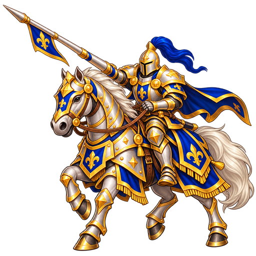

ШАХМАТНАЯ АРЕНА
Два королевства. Одна доска.
ШАХМАТЫ В СВОБОДНОЕ ВРЕМЯ
Выбери сторону и силу соперника
1 — новичок, 10 — самый внимательный соперник
Сыграно партий: 0
Результаты сохраняются на этом устройстве после завершения партии.
Учёт по уровням начался с этого обновления.

Партия против компьютера
Возьми белую фигуру и перетащи её.